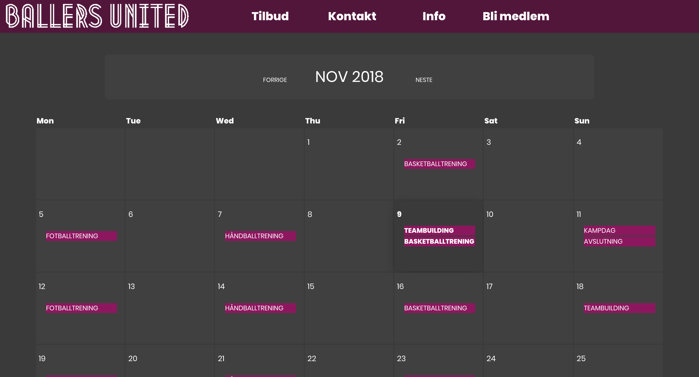

P3 Ballers United Changes
av Tobias, Jin, Emil, Lars og Erik
05.11.2018
Administrative detaljer
Klienten vår er Ballers United. Det er en fiktiv klient.
Link til sideEndringer vi har gjort
Vi har måttet endre litt på planene når det kommer til javascript funksjonaliteten på bakgrunn av tilbakemeldingene vi fikk på P2. I tilleg så har vi endret noe på det visuelle på sidene. Det er blit lagt til en html siden kalt action.html. Denne er bare en side sier ifra om at du har fulført bli medlem skjemaet. Dette ville sansyligvis bare vært en tekstboks eller liknende på en ekte nettside som kunne validert fra back-end.
Generelle endringer
Vi endret font-size fra 16 til 14 fordi vi synes dette så bedre og mer profesjonelt ut. I tilleg fjernet vi den hvite skyggen som gikk ned under menyen fordi dette ikke så så bra ut når vi fikk headinger under menyen. Artikkler og infobokser har fått avrundete hjørner da vi bestemte oss for at dette så bedre ut. Ettersom at veileder sa at man kunne legget til egne css-filer for hver side i tillegg til en base som inneholder det som går igjen gjennom hele siden, valgte vi å he en cssfil for hver side. Grunnen til at vi valgte å gjøre det sånn var at vi mener det er mer oversiktlig og enklere å finne fram til den spesifikke linjen for hvert element i hver html. Det var også snakk om å endre font-type etter en et møte med veileder, men dette har vi ikke gjort ettersom at vi ikke fant noe spesifik om dette i oppgavedokumentene vi har fått.
Enderinger på base.css
Det ble overaskende få endringer i base stylen. Vi bestemte oss for å legge til meny stilen og footer stilen i basen fordi de skal begge inkluderes på alle sidene. Noe som vi ikke hadde planlagt så nøye før vi begynt å lage siden var det med modularitet. Vi løste dette ved å dele det meste av innhold inn i mindre elementer med id artikkel. Vi delte opp artikkel header og artikkel body under dette igjen. Vi delte også opp siden i distinkte deler: meny, header, innhold og footer. Dette gjorde at vi kunne style disse elementene på en uniform måte uten å måtte kopiere koden på hver side.
Endringer på forsiden
På forsiden var det planlagt å ha bildet og arikkel separert i to forskjellige bokser, men vi har valgt å gå bort ifra dette. Grunnen til det er at når bildene ikke var riktig størrelse/sideforhold så det ikke lenger like bra ut. Derfor er det nå tre større bokser med bildene sentrert i toppen av hver boks med tekst under. Vi har også lagt til en visuell "cue" på artikklene slik at brukerne skjønner at de kan trykke på dem. De får en opacity på 0.9 ved hover og linker til den respektive tilbudssiden.
Endringer på tilbudssidene/sportssidene
Tilbud/sportssidene ble veldig lik den orginale planen. Oppsettet med headerbilde,artikeler og infobar som planlagt. Det ble lagt til en js-funksjon som lagde ett forstørret vindu av artikkelen som blir trykket på (artikkelpopup.js).Isteden for vinduPersoner.js lagde vi artikkelPopup.js da dette var en mer funksjonell funksjon. I forhold til style ble headerbilde gjort tynnere, header tynnere og kanter rundere. Dette gjorde vi fordi det ga plass til mer innhold når man først kommer til siden+ litt finere.
Endringer på kontaktsiden
Ved første øyekast ser kontaktsiden nesten helt lik den vi hadde sett for oss. Hjørnene er blitt runde som vi beskrev i Generelle endringer. En annen endring er at bildene inne i kontaktboksene blir mørkere når man har musen over dem(hover). Ettersom at vi måtte legge til en til js-fil så gjorde vi det sånn at en div kom fram midt på siden hvis man trykket på et av bildene. Denne div-en inneholder en textarea og to knapper. Knappene har den samme stilen som kanppene på kalendersiden.
Endringer på infosidene
Endringer på infosiden
Infosiden ble også veldig lik den planlagte infosiden. Widthen på de kartboksen og generel infoboksen ble slik som vi hadde planlagt. Vi fylte ikke opp sidene så mye at som vi hadde tenkt, derfor gikk ikke siden like langt ned som det den gjorde da vi planla siden. Vi hadde også sett for oss at begge boksene (både den med kartet og den med generell info) skulle gå like langt ned på siden, men det ble litt mye tommrom i kartboksen så vi endte opp med å gjære den litt kortere, fordi vi syntes det så bedre ut.
Endringer på FAQ-siden
Det er laget en drop down meny i FAQ.html. Som åpner en boks med svar på spørsmålet når du trykker på spørsmålet, og lukker boksen når du klikker på spørsmålet igjen.
Endringer på kalenderen
Det er blitt gjort store endringer angående kalenderen - både funksjonaliteten og utseendet. Ved første øyekast ser vi at kalenderen har avviket fra standardfargen som går igjen på de fleste sidene. Hovedhensikten bak denne tanken var rett og slett fordi den ble mer stilren på denne måten. Bakgrunnsfargen har blitt endret fra hvit (#ffffff) til svart med en liten gråtone (#3A3A3A). Knappene, som skifter fra måned til måned, endrer også utseende når man holder fokus over dem. Hver dag har bakgrunnsfarge #404040, en litt lysere gråfarge enn bakgrunnen. Denne bakgrunnsfargen endrer seg til none; dersom man holder musen over en dag. Vi har lagt til litt shaddow slik at rutene fortsatt skiller seg fra bakgrunnsfargen. Dagens dato er også markert på lik måte som hover-attributen til dagene. Stylingen av kalender er gjort i en egen CSS-fil kalt kalender.css. Dette ble gjort med tanke på at en spesifikk styling ble mer oversiktlig å ha i en egen fil.
Den første intensjonen angående en interaktiv kalender var å ha en dropdownliste med dagens aktiviter dersom man holdt fokus på de ulike dagene. Dette har vi endret til at aktivitene vises direkte i kalenderen. Vi synes dette ga mer luft på siden da en dropdownliste for hver dag ville ha skjult mye av kalenderen. Man har også to muligheter for å legge til aktiviter. Man kan enten legge til en event til en spesifikk dag, eller man kan legge til en ukentlig event avhengig av startdato og hvor mange uker man skal vise aktiviteten.
Endringer på bli medlem-siden
Bli medlem-siden er mer eller mindre uendret designmessig. Den største forskjellen er at den grå boksen rundt ikke lenger dekker hele siden. Siden har fått en action side som kommer frem når brukeren sender inn skjemaet. Siden eksisterer som en bekreftelse om at skjemaet har blitt motatt. Det er også lagt til et skript som validerer det brukeren skriver inn. I navn feltet skal sjekker skriptet at feltet ikke er tomt, i e-mail feltet sjekker det at brukeren har skrevet inn @ og et punktum.
Endriger på Minimumskrav 3
Denne javascript-funksjonen skulle egentlig gjøre et vindu kontaktpersoner større, men når kontaktpersoner fikk så stor plass på siden fra før, virket dette veldig unødig. Derfor ble denne funksjonen overført til artikler på sportsidene. Så istedenfor at en lang nyhetssak skulle ta opp hele siden, tar alle artiklene like mye plass, og man kan lese videre ved å trykke på dem. Det ble også lagt til en «hover-style» der artiklene lyser opp, og flytter på seg så folk forstår man kan trykke på artiklene.
Minimumskrav
kontakt.js: Vi lagde en funksjon, aktiverPopup(), som blir kjørt hvis man trykker på et av kontaktbildene. Det er denne funksjonen som gjør den nye boksen med forskjellige inputelementer synlig. Det er også en funksjon som fjerner nevnte boks dersom man trykker på avbryt-knappen.
Tobias har opprettholdt minimumskravet i javascript ved å implementere menyen i javascript. Meny.js lager en liste av lister og en drop down og roll up funksjon for disse. Den er implementert på måten den er slik at det skal være mulig å bare endre arrayene i toppen av fila for å endre hvilke menyvalg som vises og hvor disse linkes. Scriptet looper gjennom et array og lager dynamisk nye html elementer og gir dem de riktige klassenavnene slik at det skal bli lett å style dem i css.
Jin Tony har opprettholdt minimumskravet i javascript ved å implementere script til bli medlem siden og faq siden. Blimedlem.js validerer navn-feltet og email-feltet i innmeldingsskjemaet. I navne-feltet sjekkes det om brukeren har skrevet inn bokstaver, i e-mail feltet sjekkes det at brukeren har skrevet inn en email adresse. Spesifikt ved å sjekke om feltet inneholder en @ og punktum. faq.js styrer dropdown boksen når du trykker på et av spørsmålene. Funksjonen reagerer når brukeren trykker på spørsmålet, og boksen som inneholder svaret kommer frem.
Person 4
Person 5
Modularitet
Mofulariteten har blitt implementert ved å lage menyen og footeren i javascript og den gjennomgående stilen i base css. Dette gjorde at vi slapp å endre ting på hver enkelt side hvis det var noe som måtte endres på menyen eller footeren. Og hvis vi ville ha en endring i stilen på siden trengt vi bare å endre dette ett sted. Lars stod for footeren og Tobias stod for menyen og det meste av base.css. Men alle har jobbet for å finne likheter mellom sidestilene som man kunne flytte inn i base.css i stedet for å ha det lokalt på hver side. Det er også bare et stylesheet for alle sportssidene som Erik har jobbet med. Dette gir de samme fordelene som base.css, bare på et mindre antall sider.
Oppdatert organisering
Oppgavefordeling og tidsfrister
Vi måtte forlenge fristene på det meste da alt tok lengre tid enn det vi hadde regnet med. Det var ikke noe problem fordi vi hadde satt fristene ganske tidlig og hadde derfor god margin og mulighet til å forskyve ting bakover.
| Filnavn: | Description: | Deadline: | Ansvar: |
|---|---|---|---|
| index.html | Hovedside for nettsiden | 04.11 | Tobias |
| faq.html | Oversikt over forskjellige faq’s og svar | 04.11 | Jin Tony |
| info.html | Generell info om klubben og hvor den er lokalisert | 18.10 | Emil |
| fotball.html | En side med info om fotball i ballers uniteds | 18.10 | Erik |
| kalender.html | En kalender med oversikt over fremtidige arrangementer | 18.10 | Lars |
| basketball.html | Info om basketball i ballers united | 27.10 | Erik |
| bli_medlem.html | Et påmeldingskjema for de som ønsker å bli medlemmer | 27.10 | Jin Tony |
| handball.html | Info om handball i ballers united | 29.10 | Erik |
| kontakt.html | Oversikt over forskjellig kontaktinfo | 27.10 | Emil |
| footer.js | En footer som skal stå på alle sidene | 27.10 | Lars |
| meny.js | Meny bar som skal legges til på alle sidene | 27.10 | Tobias |
| vindu_personer.js | Ett nytt vindu på siden som dukker opp når man klikker på en kontaktperson | 5.11 | Erik |
| bli_medlem.js | Et skript som validerer de brukeren skriver inn på bli medlem skjemaet | 5.11 | Jin-Tony |
| Kalender.js | Funksjonell kalender beskrevet lengere opp på siden | 5.11 | Lars |
| base_style.css | En basis style som skal gjelde for alle sidene | 8.11 | alle |
| sluttkontroll | Gjennomgang og kontroll av hele siden | 10.11 | alle |
Arkivstruktur
Meny.css og footer.css er flyttet inn i base.css
- img/
-
- basketball/
-
- ball.png
- kampbilde.jpg
- scoring.png
- tittelbilde.jpg
- fotball/
-
- jenter.jpg
- kampbilde.png
- kampbilde.jpg
- spiller.jpg
- tittelbilde.png
- handball/
-
- artikkel2.jpg
- dugnad.jpg
- halloween.jpg
- IMG_2480.jpg
- ikoner/
-
- facebookIcon.png
- googleplusIcon.png
- snapchatIcon.png
- twitterIcon.png
- info/
-
- hovedbilde_info.png
- kalender/
-
- hovedbilde_kalender.png
- kontakt/
-
- hovedbilde_kontakt.png
- jin.png
- mama_jin.png
- logo.png
- style/
-
- action.css
- base.css
- blimedlem.css
- faq.css
- index.css
- info.css
- kalender.css
- kontakt.css
- sportsidene.css
- skript/
-
- artikkelPopup.js
- faq.js
- blimedlem.js
- kalender.js
- kontakt.js
- modularitet/
-
- footer.js
- meny.js
- sider/
-
- action.html
- index.html
- info.html
- faq.html
- blimedlem.html
- kontakt.html
- kalender.html
- basketball.html
- fotball.html
- handball.html
Endelig Arbeidsfordeling
| FIL | BESKRIVELSE | ANSVARLIG |
|---|---|---|
| action.html | Side brukeren komme til etter å ha sendt inn et blimedlem skjema | Jin Tony |
| index.html | Forsiden | Tobias |
| info.html | Siden gir generel informasjon og veibskrivelse | Emil |
| faq.html | Side med ofte stilte spørsmål og svar. | Jin Tony |
| blimedlem.html | Side der brukeren kan fylle inn et skjema for å melde seg inn i klubben | Jin Tony |
| kontakt.html | Inneholder navn, bilde, e-post og mobilnr på de ansatte i klubben | Emil |
| kalender.html | Lager rammen for en JavaScript-kalender. | Lars |
| basketball.html | Side for basket | Erik |
| fotball.html | Side for fotball | Erik |
| handball.html | Side for håndball | Erik |
| artikkelPopup.js | en funksjon som gjør valgt artikkel til "popup" og en funksjon for reset | |
| faq.js | Skript som åpner og lukker panelet under spørsmålet ved å trykke på spørsmålet. | Jin Tony |
| blimedlem.js | Validerer navn og e-mail feltene i skjemaet. Funksjonen for navn sjekker at det er tekst i felter, mens e-mail sjekker at det er en @ og punktum i teksten. | Jin Tony / Lars |
| kalender.js | En månedtlig, fungerende og interaktiv, kalender. Interaktiv i den grad at man kan bytte mellom ulike måneder og få opp events på diverse dager. | Lars / Tobias |
| kontakt.js | Ligner på artikkelPopup.js. Det kommer opp boks midt på siden når man trykker på bilde inne på siden. | |
| footer.js | En footer som går igjen på alle sidene. Her har man ikoner for fire ulike sosiale medier med fungerende linker til deres respektive nettsider. | Lars |
| meny.js | En navigeringsmeny som inkluderes på toppen av hver side | Tobias |
| action.css | Style for action.html, endrer på linken til å ligne en knapp. | Jin Tony |
| base.css | Overordnet style for alle sidene. Inkludert meny og footer | Tobias / Lars (footer) |
| blimedlem.css | Style for innfyllingsskjemaet, endrer på farger posisjon etc. | Jin Tony |
| faq.css | Style for faq.html, endrer på størrelsen på boksene og fargene, samt +- symboler når du åpner lukker hver boks. | Jin Tony |
| index.css | Style for index/hjemmesiden. | Tobias |
| info.css | Style for infos.html. Plasserer og styler de forskjellige elementene | Emil |
| kalender.css | Style for kalender.html. Bestemmer fargen på kalenderen og diverse hoverattributes. | Lars |
| kontakt.css | Style for kontakt.html. Styler og plasserer de forskjellige elementene og gir hover til bildene. | Emil |
| sportsidene.css | Style for handball-, fotball-, basketballsidene. | Erik |